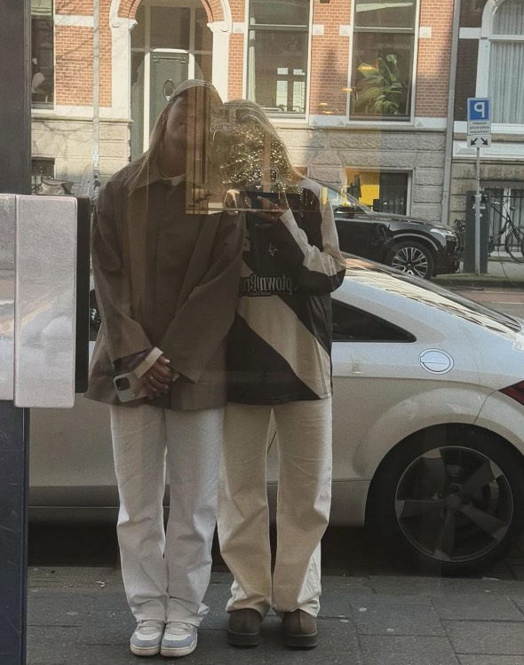
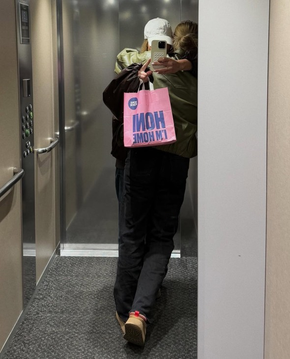

Het lijkt erop dat topvoetbalster Jill Roord en hockeyster Pien Sanders niet alleen op het veld en in de liefde een gouden duo zijn, maar ook in de Zweedse meubelwereld. Een oplettende fan spotte de twee sportsterren zingend én slepend met een kar vol meubels door de Ikea in Amsterdam. En ja, er is beeldmateriaal.
🛒🤠“Jij krijgt die lach niet van mijn gezicht...†klonk het luid en duidelijk terwijl Jill een Billy-boekenkast en een Lack-tafeltje op de kar balanceerde. Ondertussen gooide Pien er een indrukwekkende tweede stem doorheen. The Voice of Ikea, iemand?
Volgens de fan leek het stel “heel gelukkig en totaal niet gestrest over de montagehandleiding”, wat al een prestatie op zich is.
En het blijft niet bij deze muzikale meubelshopping. Op Instagram deelde Pien later een Story waarin ze lachend zegt: “Als je relatie een Ikea-bezoek overleeft, kun je alles aan!†Jill reageerde met een hartje en het inmiddels iconische “Ik vind je leuk â¤ï¸â€.
📸 Geen officiële reactie van Ikea tot nu toe, maar een medewerker uit de vestiging vertelde anoniem: “Ze waren supergezellig. En Jill heeft serieus talent voor het in elkaar zetten van een MALM-lade.”
We kunnen dus gerust stellen: dit powerkoppel heeft de showroom gestolen én onze harten. 💘